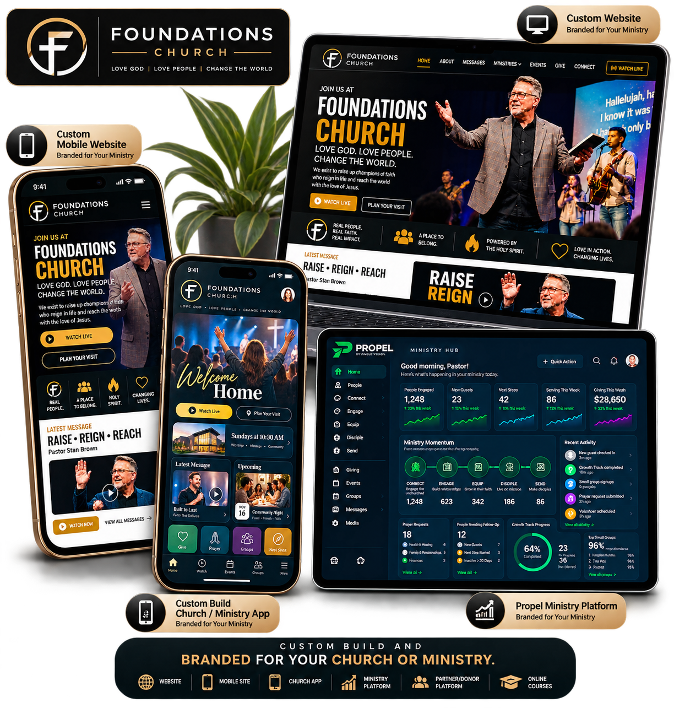

PROPEL PRESENTS
DIGITAL MINISTRY BLUEPRINT
One ministry.
One connected
ecosystem.
A complete vision for how your website, mobile experience, app, giving, guests, discipleship, groups, serving, check-in, communication, partner/donor platform, online courses and ministry operations can work together.

THE VISION
One connected digital ministry ecosystem.
Continue the approved 29-section Blueprint here. This update package intentionally changes only the opening hero and its approved supporting copy.